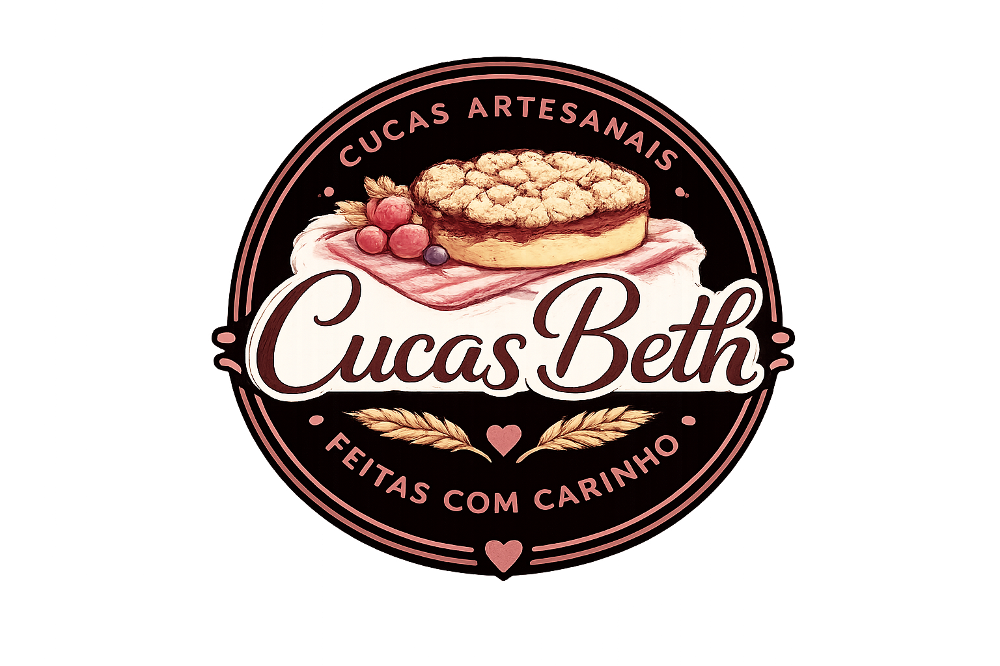

Cucas Artesanais Feitas com Carinho
Massa macia, recheios cremosos e ingredientes selecionados. Cada fatia carrega afeto, tradição e aquele sabor caseiro que traz memória afetiva.
Dona Bete dedicou grande parte da sua vida ao cuidado com as pessoas. Trabalhando desde os 20 anos como técnica de enfermagem, construiu uma trajetória marcada por carinho, dedicação e amor ao próximo.
Foram mais de 15 anos atuando no Hospital São Pedro, sempre levando acolhimento por onde passou. Hoje, aos 63 anos, ela mostra que nunca é tarde para se reinventar.
Mais de 15 anos no Hospital São Pedro levando acolhimento e cuidado a cada paciente.
Hobby e tradição de família que sempre foi fonte de alegria e afeto para todos ao redor.
Após muitos testes e aperfeiçoamentos, um novo sonho: cucas artesanais feitas com carinho.
"Mais do que cucas, a Cucas Beth entrega afeto, tradição e sabor em cada fatia. Porque algumas receitas carregam histórias. E essa história continua sendo escrita todos os dias."Dona Bete
Cucas de 500–600g · Sob encomenda · Porto Alegre–RS
Cada ingrediente é escolhido com cuidado para garantir sabor, qualidade e o carinho que a Cucas Beth representa.
Sob demanda · Peça via WhatsApp · Porto Alegre, RS